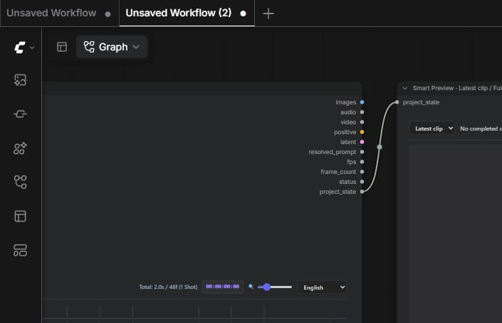

MiniMax H3 Smart Preview
Plays completed cached shots in a separate node, with Latest clip and Full video scopes.
Use it when: Connect this at the end of the starter instead of a video-saving node.
In plain language
This is your video player, in its own box. It watches completed shots from the Master. The default shows only the newest clip, so you do not download the whole movie again just to see the new part.
Connections
Master project_state → Smart Preview project_stateA separate output sink with an on-demand player
Connect Master.project_state to Smart Preview.project_state. The Python node validates the JSON project identity/clip list and returns it as UI state; its output-node status makes the upstream Master schedulable. The browser player then queries the pack's preview API for a completed cached take. It does not consume the Master's complete IMAGE batch merely to display the newest clip.
Before a run, the player can read its connected Master's authored timeline. After execution, it receives the project state and refreshes. Completion events for the same project can update the displayed take. Disconnecting the node removes the necessary association; an unrelated project's completion must not replace your current player.
Latest clip and Full video are different media requests
Latest clip requests a separate preview file for the newest completed take. It is not the entire movie with playback seeking to the end. This reduces server encoding/upload and browser buffering when you only want to review the added segment. Full video explicitly requests an assembled preview of completed shots so you can inspect the joins. Incomplete/unavailable takes cannot be represented as real finished preview frames.
The request is revision-addressed: unchanged take identities/scopes reuse stable preview URLs instead of changing a cache-busting timestamp on every refresh. A new take creates a new revision, so the browser needs its new media. The player uses metadata preload and cancels/cleans up obsolete asynchronous requests to avoid an older response replacing a more recent preview.
Preview copies fit within 960×540. This is a preview-resolution limit, not your generation canvas or final export quality. For final-resolution video, use the ordinary saver path or Project Video Export. Latest-clip mode reduces preview traffic but does not remove all of the Master's server-side latent, decode or output-assembly work.
Autoplay, refresh and saving
Autoplay requests playback of a newly loaded clip, subject to browser media permissions. Native play controls remain usable if the browser blocks automatic playback. Refresh retries/rechecks the current cached preview; it does not add a generation job. Save preview, available for a completed media result, downloads the displayed scope's preview copy. Latest clip saves only that clip; Full video saves the preview sequence.
The node saves its scope/autoplay preferences as frontend properties. The player cleans listeners, media and pending requests when removed. These controls do not change Generation mode, selected-shot eligibility, sampler steps or whether a shot is approved.
An incremental review loop
- Set Settings Generation mode to Next shot.
- Run the Master through the connected Smart Preview.
- Inspect Latest clip, including motion and audio. Accept/validate the take in the Master when appropriate.
- Run for the next new shot; inspect only its downloaded clip.
- Choose Full video to assess continuity, then export final quality separately.
If the player reports no completed clips, check that a take was actually sampled and cached; Conditioning only is not generation. If it repeatedly downloads an unchanged full movie, check the scope and revision, not the timeline's selection checkbox. If a preview URL cannot load, inspect server connectivity, cache completeness and encoder availability. Browser playback failure and model generation failure are different problems.
Implementation: output sink, linked player, scope/revision handling, preview API media preparation.
Execution summary
- Reads the Master’s project_state output to identify completed cached takes. It does not generate video or combine the full movie on every run.
- Latest clip requests a separate preview file for the newest completed take. Full video explicitly requests the completed sequence. Preview copies fit within 960 × 540.
- Autoplay, Refresh and Save preview live in this player. Preview URLs are revision-addressed so unchanged clips do not rebuffer.
How to use it
- Connect Master project_state to Smart Preview project_state.
- Run after editing shots in the Master. The latest completed clip appears here.
- Choose Full video only when you want the sequence. Use Save preview to download the preview copy.
Input sockets
| Input / control | Type · initial value | What it does |
|---|---|---|
project_stateRequired | STRINGConnection | Connect the Master's project_state output. Reads completed shot caches without exporting the full movie. |
Outputs
This display node has no output sockets. It is the workflow’s preview endpoint.
Additional usage


Player controls
- Latest clip: download only the newest completed take.
- Full video: explicitly request the completed sequence.
- Autoplay: play new media when the browser permits; native play controls remain available.
- Refresh: retry the current preview without generating another shot.
- Save preview: download the currently selected preview copy.
Limits and troubleshooting
- This is an output node: its connection makes the Master run. It needs completed take caches on the same ComfyUI server.
- For final-resolution export, use the consolidated workflow’s Create Video → Save Video path.
Related nodes
Definition: nodes/node_smart_preview.py